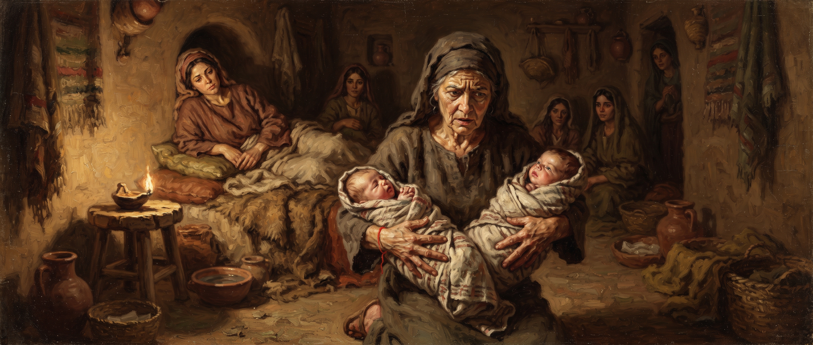

Genesis
Chapter Thirty-Eight
King James Version
And it came to pass at that time, that Judah went down from his brethren, and turned in to a certain Adullamite, whose name was Hirah. 2And Judah saw there a daughter of a certain Canaanite, whose name was Shuah; and he took her, and went in unto her. 3And she conceived, and bare a son; and he called his name Er. 4And she conceived again, and bare a son; and she called his name Onan. 5And she yet again conceived, and bare a son; and called his name Shelah: and he was at Chezib, when she bare him.
6And Judah took a wife for Er his firstborn, whose name was Tamar. 7And Er, Judah's firstborn, was wicked in the sight of the LORD; and the LORD slew him. 8And Judah said unto Onan, Go in unto thy brother's wife, and marry her, and raise up seed to thy brother. 9And Onan knew that the seed should not be his; and it came to pass, when he went in unto his brother's wife, that he spilled it on the ground, lest that he should give seed to his brother. 10And the thing which he did displeased the LORD: wherefore he slew him also.
11Then said Judah to Tamar his daughter in law, Remain a widow at thy father's house, till Shelah my son be grown: for he said, Lest peradventure he die also, as his brethren did. And Tamar went and dwelt in her father's house.
12And in process of time the daughter of Shuah Judah's wife died; and Judah was comforted, and went up unto his sheepshearers to Timnath, he and his friend Hirah the Adullamite. 13And it was told Tamar, saying, Behold thy father in law goeth up to Timnath to shear his sheep. 14And she put her widow's garments off from her, and covered her with a vail, and wrapped herself, and sat in an open place, which is by the way to Timnath; for she saw that Shelah was grown, and she was not given unto him to wife.
15When Judah saw her, he thought her to be an harlot; because she had covered her face. 16And he turned unto her by the way, and said, Go to, I pray thee, let me come in unto thee; (for he knew not that she was his daughter in law.) And she said, What wilt thou give me, that thou mayest come in unto me? 17And he said, I will send thee a kid from the flock. And she said, Wilt thou give me a pledge, till thou send it? 18And he said, What pledge shall I give thee? And she said, Thy signet, and thy bracelets, and thy staff that is in thine hand. And he gave it her, and came in unto her, and she conceived by him. 19And she arose, and went away, and laid by her vail from her, and put on the garments of her widowhood.
20And Judah sent the kid by the hand of his friend the Adullamite, to receive his pledge from the woman's hand: but he found her not. 21Then he asked the men of that place, saying, Where is the harlot, that was openly by the way side? And they said, There was no harlot in this place. 22And he returned to Judah, and said, I cannot find her; and also the men of the place said, that there was no harlot in this place. 23And Judah said, Let her take it to her, lest we be shamed: behold, I sent this kid, and thou hast not found her.
24And it came to pass about three months after, that it was told Judah, saying, Tamar thy daughter in law hath played the harlot; and also, behold, she is with child by whoredom. And Judah said, Bring her forth, and let her be burnt. 25When she was brought forth, she sent to her father in law, saying, By the man, whose these are, am I with child: and she said, Discern, I pray thee, whose are these, the signet, and bracelets, and staff. 26And Judah acknowledged them, and said, She hath been more righteous than I; because that I gave her not to Shelah my son. And he knew her again no more.
27And it came to pass in the time of her travail, that, behold, twins were in her womb. 28And it came to pass, when she travailed, that the one put out his hand: and the midwife took and bound upon his hand a scarlet thread, saying, This came out first. 29And it came to pass, as he drew back his hand, that, behold, his brother came out: and she said, How hast thou broken forth? this breach be upon thee: therefore his name was called Pharez. 30And afterward came out his brother, that had the scarlet thread upon his hand: and his name was called Zarah.
6And Judah took a wife for Er his firstborn, whose name was Tamar. 7And Er, Judah's firstborn, was wicked in the sight of the LORD; and the LORD slew him. 8And Judah said unto Onan, Go in unto thy brother's wife, and marry her, and raise up seed to thy brother. 9And Onan knew that the seed should not be his; and it came to pass, when he went in unto his brother's wife, that he spilled it on the ground, lest that he should give seed to his brother. 10And the thing which he did displeased the LORD: wherefore he slew him also.
11Then said Judah to Tamar his daughter in law, Remain a widow at thy father's house, till Shelah my son be grown: for he said, Lest peradventure he die also, as his brethren did. And Tamar went and dwelt in her father's house.
12And in process of time the daughter of Shuah Judah's wife died; and Judah was comforted, and went up unto his sheepshearers to Timnath, he and his friend Hirah the Adullamite. 13And it was told Tamar, saying, Behold thy father in law goeth up to Timnath to shear his sheep. 14And she put her widow's garments off from her, and covered her with a vail, and wrapped herself, and sat in an open place, which is by the way to Timnath; for she saw that Shelah was grown, and she was not given unto him to wife.
15When Judah saw her, he thought her to be an harlot; because she had covered her face. 16And he turned unto her by the way, and said, Go to, I pray thee, let me come in unto thee; (for he knew not that she was his daughter in law.) And she said, What wilt thou give me, that thou mayest come in unto me? 17And he said, I will send thee a kid from the flock. And she said, Wilt thou give me a pledge, till thou send it? 18And he said, What pledge shall I give thee? And she said, Thy signet, and thy bracelets, and thy staff that is in thine hand. And he gave it her, and came in unto her, and she conceived by him. 19And she arose, and went away, and laid by her vail from her, and put on the garments of her widowhood.
20And Judah sent the kid by the hand of his friend the Adullamite, to receive his pledge from the woman's hand: but he found her not. 21Then he asked the men of that place, saying, Where is the harlot, that was openly by the way side? And they said, There was no harlot in this place. 22And he returned to Judah, and said, I cannot find her; and also the men of the place said, that there was no harlot in this place. 23And Judah said, Let her take it to her, lest we be shamed: behold, I sent this kid, and thou hast not found her.
24And it came to pass about three months after, that it was told Judah, saying, Tamar thy daughter in law hath played the harlot; and also, behold, she is with child by whoredom. And Judah said, Bring her forth, and let her be burnt. 25When she was brought forth, she sent to her father in law, saying, By the man, whose these are, am I with child: and she said, Discern, I pray thee, whose are these, the signet, and bracelets, and staff. 26And Judah acknowledged them, and said, She hath been more righteous than I; because that I gave her not to Shelah my son. And he knew her again no more.

Study: More Righteous Than I
This chapter interrupts Joseph's story so abruptly that most readers assume it must belong somewhere else entirely. It doesn't. Genesis places it exactly here, in the middle of the family's grief over Joseph, and the contrast is likely deliberate: while Jacob mourns a son he believes dead, Judah is off building an entirely separate, troubled family of his own.
Two of Judah's sons die under God's judgment in quick succession — Er for an unspecified wickedness, and Onan for deliberately refusing to fulfill his duty to his brother's widow under the custom that required a surviving brother to raise up an heir in the dead man's name. Judah's response to losing two sons in a row is to quietly abandon his obligation to Tamar altogether, promising his youngest son to her "when he's grown" and then simply never following through, leaving her stranded as a childless widow in her father's house with no real path forward.
What Tamar does about that is audacious by any measure. She disguises herself, waits by the road she knows Judah will travel, and lets him mistake her for a prostitute rather than recognize her as his own daughter-in-law. Before anything happens, she has the presence of mind to demand a pledge substantial enough to prove his identity later: his personal seal, his bracelets, and his own staff — items a man wouldn't easily part with and couldn't credibly deny were his.
When Tamar's pregnancy becomes known, Judah's own moral blindness is on full display — he orders her burned for the very thing he himself did, with no apparent awareness of the irony until she produces the pledge items and asks him, without accusation, simply to identify them. His response is the chapter's real turning point: "She hath been more righteous than I." Not an excuse. Not a defense. A flat admission that the woman he was ready to execute had acted with more integrity than he had, in a situation he himself created by failing her.
The birth that closes the chapter carries its own strange detail worth noticing. The twin who reaches out first gets marked with a scarlet thread by the attending midwife, confidently declared the firstborn — and then pulls his hand back, and his brother is the one who actually emerges first instead. The reversal is even built into the name given him: Pharez means "breach" or "breaking through," a birth order upended at the very last second.
That reversal matters far beyond this one chapter. It's Pharez's line, not the one anyone would have expected by rank or by the story's own tangled beginnings, that Scripture traces forward through Boaz and Ruth, through David, and all the way into Matthew's genealogy of Jesus Himself. A chapter most readers skip past turns out to be quietly load-bearing for everything that follows.
One reading takes that scarlet thread further still, tying it to a pattern that runs through the entire Bible: every firstborn, under the law, belonged to God and had to be redeemed.
“
“When her first child broke forth, it was just a hand. And the midwife put a scarlet streak around it, because a scarlet streak spake of redemption... The scarlet streak has, all the way through the Bible, meant redemption; which was pointing forward to the first child coming. The first horse borned, the first cow borned, ever what it was, everything that was borned first, was under redemption, had to be redeemed... And when Jesus Christ was borned, He redeemed the whole world.”
— William Branham, “Questions and Answers on Hebrews, Part III” (57-1006)
Read that way, the small hand that reached out first, was marked, and then withdrew — only for its brother to be born ahead of it after all — becomes a real-life echo of that same law, one this reading ultimately traces forward to Christ's own redemption of "every creature that was ever created on the earth."
← Genesis 37
Genesis 39 — not yet written →